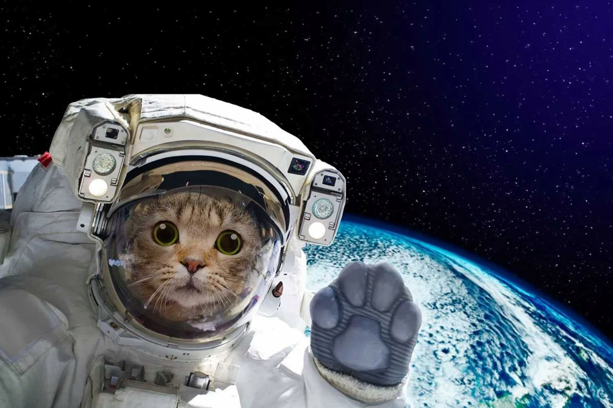

O Gatinho Galáctico e o Segredo Cósmico
Uma viagem interplanetária, um mistério escondido nas estrelas...
Só os mais curiosos conseguem desvendar o segredo do Gatinho Galáctico!
🐾✨

Ilustração: Gatinho Galáctico
(O segredo está nas estrelas... ou será no pelo?)